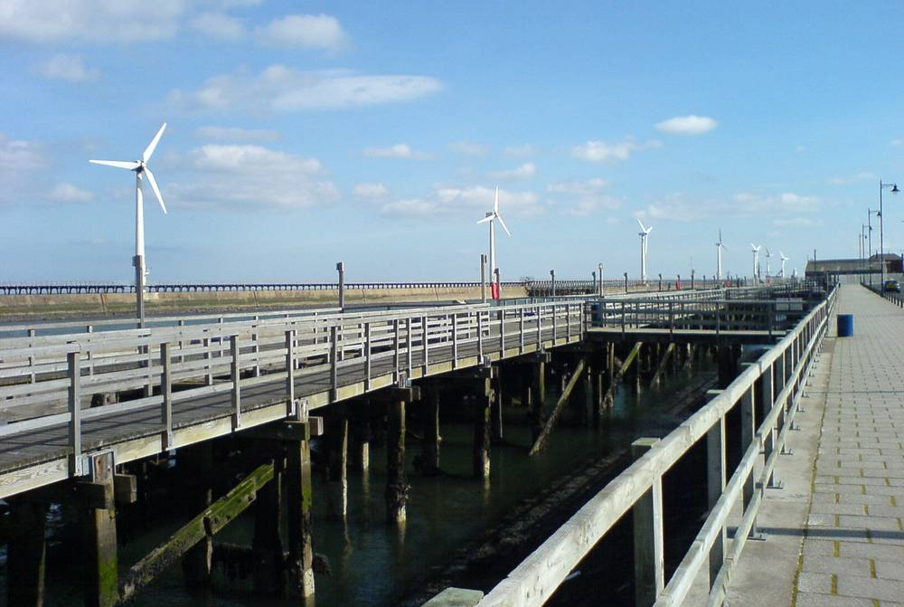

영국 내셔널그리드, 블라이스 변전소 증설 지역에 최대 106만 파운드 공동체 기금…쓰임새는 주민 의견 받아 정한다

데이터센터·버윅뱅크 해상풍력 연결용 변전소 1·2단계에 53만 파운드씩, 12월 6일까지 4주간 의견 수렴…기금은 내년 여름 출범
영국 송전망 회사 내셔널그리드가 잉글랜드 북동부 노섬벌랜드의 블라이스 변전소를 늘리면서 주변 지역에 최대 106만 파운드의 공동체 기금을 내놓기로 하고, 돈을 어디에 쓸지 주민 의견을 받기 시작했다. 사업은 두 단계로, 1단계는 기존 변전소를 넓혀 캄보이스 데이터센터 단지에 첫 전력 연결을 해 주고, 2단계는 근처에 변전소를 새로 지어 데이터센터에 용량을 더하고 계획 중인 버윅뱅크 해상풍력단지를 연결한다. 기금은 단계마다 53만 파운드씩 배정되며, 1단계 인허가를 모두 받은 회사는 내년 2월 본공사에 들어갈 예정이다. 의견 수렴은 블라이스·이스트베들링턴·캄보이스와 주변 지역 주민, 자선단체, 주민 단체를 대상으로 12월 6일까지 4주 동안 열리며, 회사가 제시한 4가지 지원 주제에 대한 생각을 묻는다. 11월 17일 온라인 설명회와 21일 블라이스 장터 광장, 28일 이스트베들링턴 주민센터 현장 행사도 열리고, 기금은 내년 여름 출범한다.
시민에너지 관점
데이터센터와 해상풍력을 잇는 변전소 하나에 100만 파운드가 넘는 기금을 붙이고 쓰임새를 주민에게 묻는 방식은, 전력망 건설의 부담을 지는 지역에 몫을 돌려주는 것이 사업을 늦추는 비용이 아니라 갈등을 줄이는 투자라는 것을 보여 준다. 일회성 기금이 주민 마음을 사는 '보상금'에 그칠 수 있다는 비판도 있지만, 주제와 배분을 주민이 정하고 공개하면 지역 공동체의 자산으로 남길 수 있다. 한국도 송변전 설비 주변 지역 지원 제도가 있으나, 주민이 쓰임새를 함께 정하는 공론 절차는 약하고 망이 실어 나르는 재생에너지 수익을 나누는 길은 더 좁다. 정부와 한전은 새 송변전 사업마다 주민이 배분을 정하는 공동체 기금과 함께, 연결되는 발전사업에 주민이 출자할 몫을 처음부터 설계하기 바란다.
출처: Northumberland Gazette 2026-11-10 Tom Patterson 원문 보기
창간 전 시험 발행 기사입니다.
英ナショナル・グリッド、ブライス変電所の増設地域に最大106万ポンドのコミュニティー基金…使い道は住民の意見を聞いて決める
データセンターとバーウィック・バンク洋上風力をつなぐ変電所の第1・2段階に53万ポンドずつ、12月6日まで4週間の意見募集…基金は来年夏に始動
英国の送電会社ナショナル・グリッドは、イングランド北東部ノーサンバーランド州のブライス変電所を拡張するのに合わせ、周辺地域に最大106万ポンドのコミュニティー基金を設けることにし、使い道について住民の意見を募り始めた。事業は2段階で、第1段階では既存の変電所を拡張してカンボイス・データセンター・キャンパスに最初の電力接続を提供し、第2段階では近くに変電所を新設してデータセンターの容量を増やすとともに、計画中のバーウィック・バンク洋上風力発電所を接続する。基金は各段階に53万ポンドずつ割り当てられ、第1段階の許認可をすべて得た同社は来年2月に本工事に入る予定だ。意見募集はブライス、イースト・ベドリントン、カンボイスと周辺地域の住民、慈善団体、住民団体を対象に12月6日まで4週間行われ、同社が示した4つの支援テーマについて考えを聞く。11月17日にオンライン説明会、21日にブライスの市場広場、28日にイースト・ベドリントンのコミュニティーセンターで現地イベントも開かれ、基金は来年夏に始動する。
市民エネルギーの視点
データセンターと洋上風力をつなぐ変電所ひとつに100万ポンドを超える基金を付け、使い道を住民に尋ねるやり方は、送電網建設の負担を負う地域に取り分を返すことが事業を遅らせるコストではなく、対立を減らす投資であることを示している。一回限りの基金は住民の気持ちを買う「補償金」にとどまりかねないという批判もあるが、テーマと配分を住民が決めて公開すれば、地域社会の資産として残すことができる。韓国にも送変電設備の周辺地域を支援する制度はあるが、住民が使い道を一緒に決める公論の手続きは弱く、送電網が運ぶ再エネの収益を分け合う道はさらに狭い。政府と韓国電力公社は新たな送変電事業ごとに、住民が配分を決めるコミュニティー基金とともに、接続される発電事業に住民が出資できる枠を最初から設計してほしい。
出典: Northumberland Gazette 2026-11-10 Tom Patterson 原文を読む
創刊前の試験発行記事です。
英国国家电网为布莱斯变电站扩建地区设立最高106万英镑社区基金，用途听取居民意见后决定
连接数据中心和伯威克滩海上风电的变电站一、二期各分配53万英镑，征求意见4周至12月6日，基金明年夏季启动
英国输电公司国家电网（National Grid）在扩建英格兰东北部诺森伯兰郡布莱斯变电站之际，决定为周边地区设立最高106万英镑的社区基金，并开始就资金用途征求居民意见。项目分两期：一期扩建现有变电站，为坎博伊斯数据中心园区提供首个电力接入；二期在附近新建变电站，为数据中心增加容量，并接入规划中的伯威克滩（Berwick Bank）海上风电场。基金每期分配53万英镑，已取得一期全部许可的该公司预计明年2月开始主体工程。意见征集面向布莱斯、东贝德灵顿、坎博伊斯及周边地区的居民、慈善机构和社区团体，为期4周至12月6日，询问大家对公司提出的4个资助主题的看法。11月17日将举行线上说明会，21日在布莱斯集市广场、28日在东贝德灵顿社区中心举办现场活动，基金将于明年夏季启动。
市民能源视角
为一座连接数据中心和海上风电的变电站配套超过100万英镑的基金，并向居民征询用途，这种做法说明：把份额返还给承担电网建设负担的地区，不是拖慢项目的成本，而是减少冲突的投资。也有批评认为一次性基金可能只是收买人心的"补偿金"，但如果主题和分配由居民决定并公开，就能留下社区的资产。韩国也有输变电设施周边地区支援制度，但居民共同决定用途的公共讨论程序薄弱，分享电网所输送的可再生能源收益的途径更窄。希望政府和韩国电力公社在每个新的输变电项目中，从一开始就同时设计由居民决定分配的社区基金，以及居民可以入股所接入发电项目的份额。
来源: Northumberland Gazette 2026-11-10 Tom Patterson 查看原文
本文为创刊前试发行文章。
National Grid Offers Up to 1.06 Million Pounds in Community Funding Around Blyth Substation Expansion, With Residents Asked How It Should Be Spent
530,000 pounds for each phase of a substation project connecting a data centre campus and the Berwick Bank offshore wind farm; four-week consultation runs to 6 December, with the fund due to launch next summer
National Grid, the British transmission company, is offering a community fund worth up to 1.06 million pounds to areas around its Blyth Substation in Northumberland, north-east England, as it expands the site, and has begun asking residents how the money should be spent. The project has two phases: the first extends the existing substation to provide an initial connection for the Cambois Data Centre Campus, and the second would build a new substation nearby to add capacity for the data centre campus and connect the proposed Berwick Bank offshore wind farm. The fund allocates 530,000 pounds to each phase, and the company, which has secured all consents for phase one, expects main construction to start in February. The four-week consultation, open to residents, charities and community groups in Blyth, East Bedlington, Cambois and surrounding areas until 6 December, asks for views on four proposed funding themes. An online webinar will be held on 17 November, with drop-in events at Blyth's Market Place on the 21st and East Bedlington Community Centre on the 28th, and the fund is expected to launch next summer.
Citizen Energy View
Attaching a fund of more than 1 million pounds to a single substation linking a data centre and offshore wind, and asking residents how to spend it, shows that returning a share to the communities that bear the burden of grid building is not a cost that slows projects but an investment that reduces conflict. Critics say one-off funds can amount to little more than "compensation" to win people over, but when residents set the themes and allocations in the open, the money can become a lasting community asset. South Korea has support schemes for areas around transmission facilities, but public deliberation in which residents help decide how money is used is weak, and the path to sharing the renewable revenue carried by the grid is narrower still. The government and KEPCO should design, from the outset of every new transmission project, both a community fund whose allocation residents decide and a share that residents can invest in the generation projects it connects.
Source: Northumberland Gazette 2026-11-10 Tom Patterson Read the original
This article was published during the trial period before launch.